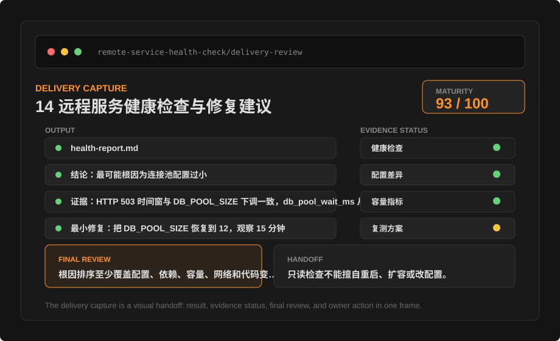
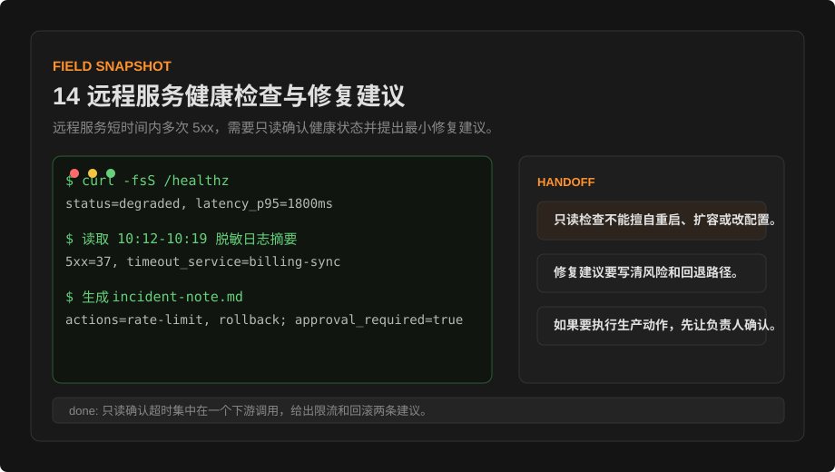
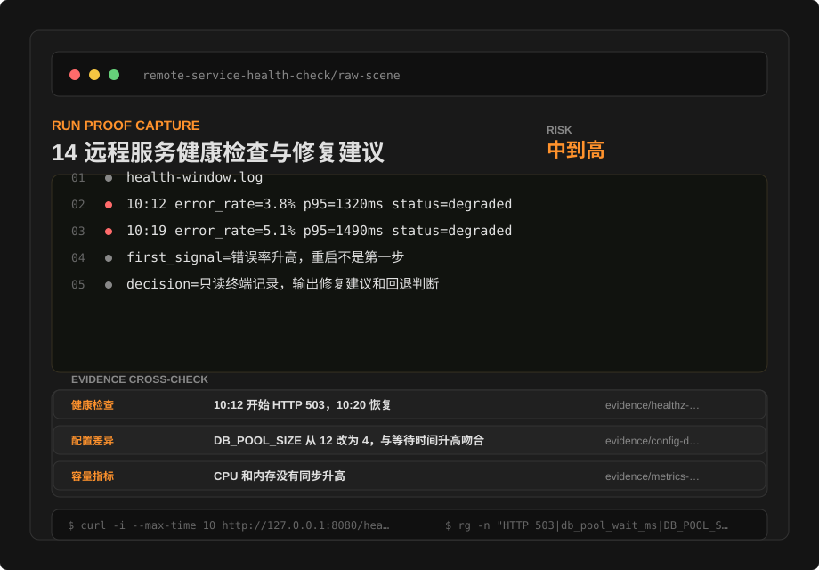
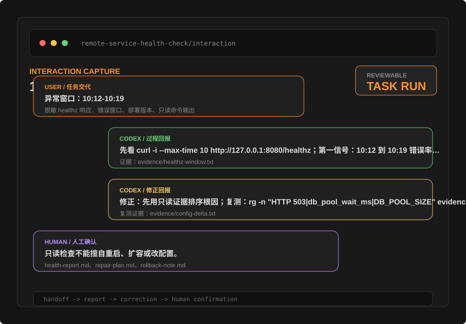
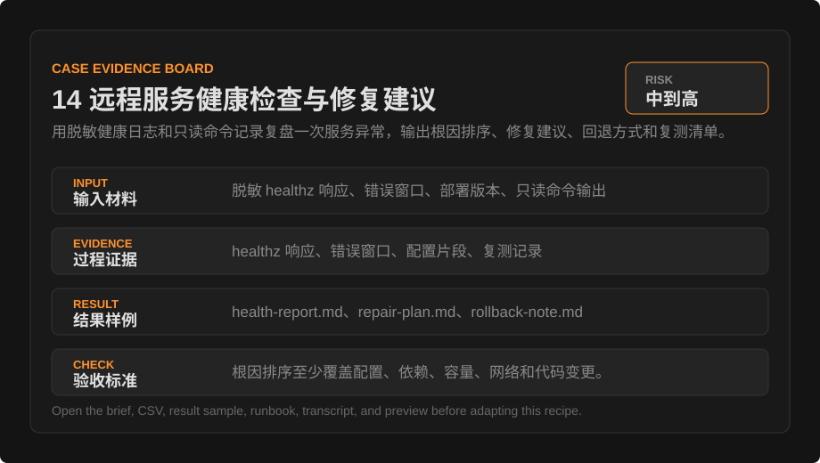
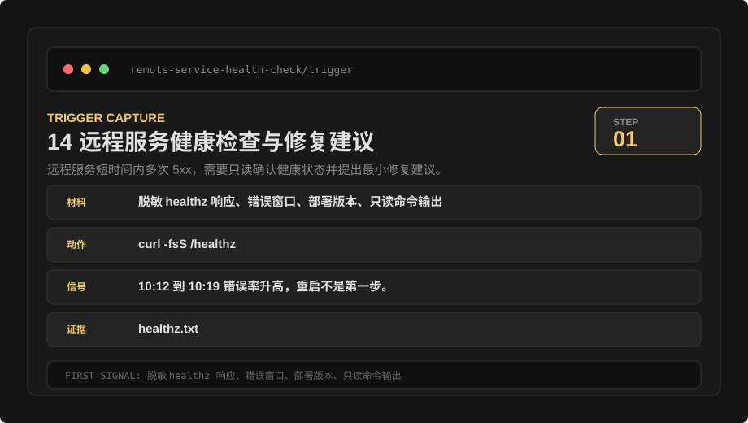
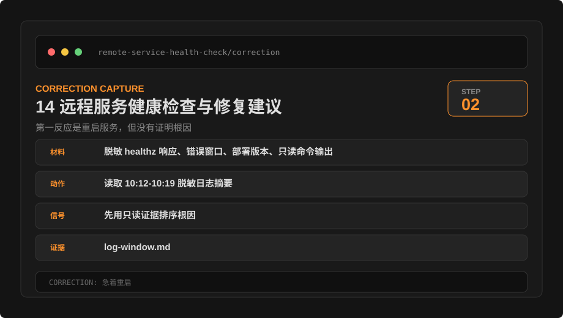
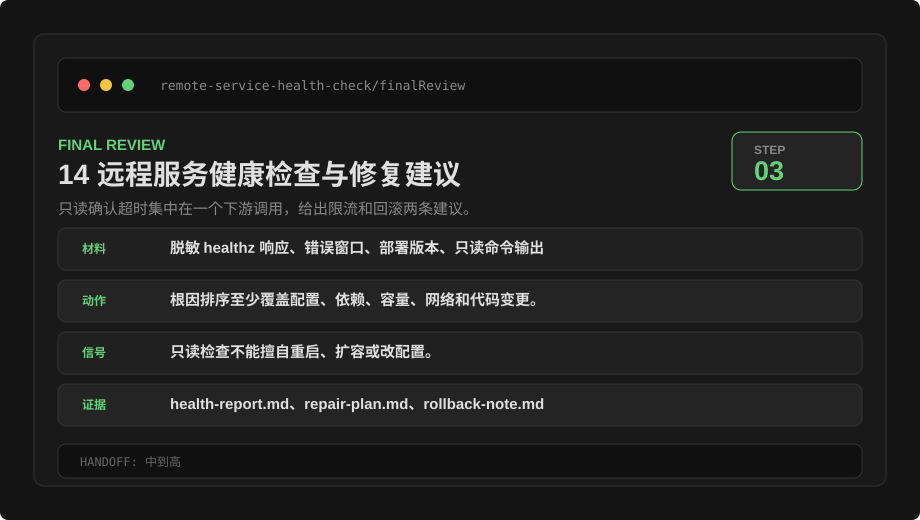

中文
实战案例
14 远程服务健康检查与修复建议
用脱敏健康日志和只读命令记录复盘一次服务异常，输出根因排序、修复建议、回退方式和复测清单。
现场叙事
先用四个现场信号读懂这次任务：为什么开始、第一处异常是什么、怎么修正、凭什么交付。
这次任务不是从“生成一个结果”开始，而是先判断现场是否足够明确：远程服务短时间内多次 5xx，需要只读确认健康状态并提出最小修复建议。 起始材料被限制在 脱敏 healthz 响应、错误窗口、部署版本、只读命令输出，同时先写下禁止动作，避免把检查任务扩大成修改任务。
第一轮判断没有直接给结论，而是盯住第一个可观察信号：10:12 到 10:19 错误率升高，重启不是第一步。 对应的证据落在 evidence/healthz-window.txt。真正需要修的是“急着重启”，现象是 第一反应是重启服务，但没有证明根因，因此只执行最小修正：先用只读证据排序根因。
交付阶段没有只看文件是否生成，而是把复测信号、交付物和人工交接放在一起判断。复测证据是 evidence/config-delta.txt，最终交付为 health-report.md、repair-plan.md、rollback-note.md；仍需人工继续判断的是：只读检查不能擅自重启、扩容或改配置。

| 节点 | 现场判断 | 证据 | 下一步 |
|---|---|---|---|
| 问题触发 | 远程服务短时间内多次 5xx，需要只读确认健康状态并提出最小修复建议。 | 脱敏 healthz 响应、错误窗口、部署版本、只读命令输出 | 先锁定材料和禁止动作。 |
| 第一信号 | 10:12 到 10:19 错误率升高，重启不是第一步。 | evidence/healthz-window.txt | 只把可观察现象写进判断。 |
| 修正动作 | 先用只读证据排序根因 | evidence/config-delta.txt | 先做最小修正，再复测。 |
| 交付判断 | 只读确认超时集中在一个下游调用，给出限流和回滚两条建议。 | health-report.md、repair-plan.md、rollback-note.md | 留下结果、证据和人工交接。 |
触发：远程服务短时间内多次 5xx，需要只读确认健康状态并提出最小修复建议。
第一信号：10:12 到 10:19 错误率升高，重启不是第一步。
修正：先用只读证据排序根因
交付：health-report.md、repair-plan.md、rollback-note.md
人工确认：只读检查不能擅自重启、扩容或改配置。任务背景
用脱敏健康日志和只读命令记录复盘一次服务异常，输出根因排序、修复建议、回退方式和复测清单。
原始现场片段
这一段保留任务开始时看到的最小现场材料。它不是最终结论，而是后续判断、修正和验收的起点。
health-window.log
10:12 error_rate=3.8% p95=1320ms status=degraded
10:19 error_rate=5.1% p95=1490ms status=degraded
first_signal=错误率升高，重启不是第一步
decision=只读终端记录，输出修复建议和回退判断输入材料
本次任务先锁定可读取材料、禁止动作和输出格式，再开始生成或检查。
- 只提供脱敏日志和只读命令输出，不提供真实密钥、主机名、账号或客户数据。
- 第一轮只做诊断和建议，不执行重启、删除、发布或配置写入。
- 所有修复建议都必须带回退方式、影响范围和复测步骤。
异常窗口：10:12-10:19
healthz: HTTP 503, db_pool_wait_ms=4800
最近改动：配置里 DB_POOL_SIZE 从 12 改成 4
限制：只读分析，不重启服务，不修改配置
目标：判断最可能根因，并给出最小修复和回退方式运行环境
- 材料目录：
workspace/service-health-demo/，只读记录放在evidence/。 - 检查窗口：2026-05-28 10:05 到 10:35，版本：
web-2026.05.28-2。 - 输出只给诊断、建议和验收，不自动连接生产环境。
实测快照
这一屏只放能证明任务实际跑过的现场信号：为什么开始、用了什么、第一处异常是什么、最后凭什么交付。
实测材料包
每个案例都提供一组可打开的演示文件：输入任务单、证据表、结果片段、验收 runbook、执行转录、交付预览、前后对比、质量评分、操作回放、人工交接、现场图、验收总账、交付截图、原始现场片段、现场捕获、触发现场、修正现场、终审现场、关键交互片段、交互截图和证据看板。读者可以先看材料，再替换成自己的任务。
{kind=link}
{kind=link}
{kind=link}
{kind=link}
{kind=link}
{kind=link}
{kind=link}
{kind=link}




三段式现场证据
这一组图按真实任务顺序组织：先证明为什么开始，再证明怎样修正，最后证明凭什么交付。它让读者不只看到结果，还能复盘判断路径。



操作剧本
- 先按时间线整理 healthz、错误日志、部署版本和配置差异。
- 把根因分成配置、依赖、容量、网络和代码变更五类，并逐项给验证方式。
- 只输出修复建议和复测清单，等待用户确认后再进入执行阶段。
命令回放
命令回放把动作、观察输出和证据文件放在同一张表里。读者可以直接判断这次任务是否有可复核链路。
| 阶段 | 命令/动作 | 观察输出 | 证据文件 |
|---|---|---|---|
| 健康检查 | curl -fsS /healthz | status=degraded, latency_p95=1800ms | healthz.txt |
| 日志窗口 | 读取 10:12-10:19 脱敏日志摘要 | 5xx=37, timeout_service=billing-sync | log-window.md |
| 建议 | 生成 incident-note.md | actions=rate-limit, rollback; approval_required=true | incident-note.md |
现场记录
现场记录按时间保留关键判断点，帮助读者理解这次任务为什么能交付。
| 时间 | 动作 | 材料/证据 | 判断 |
|---|---|---|---|
| 00:00 | 锁定任务范围和禁止动作 | 脱敏 healthz 响应、错误窗口、部署版本、只读命令输出 | 可执行 |
| 00:08 | 核对运行入口与材料位置 | 日志包 + 只读终端记录 | 通过 |
| 00:22 | 采集过程证据并形成表格 | healthz 响应、错误窗口、配置片段、复测记录 | 已留痕 |
| 00:35 | 整理交付物、失败修正和验收命令 | health-report.md、repair-plan.md、rollback-note.md | 待人工终审 |
执行转录
执行转录把关键命令、观察、失败点、修正动作和终审判断串成连续记录，方便复盘具体过程。
00:00 读取任务单，确认材料范围：脱敏 healthz 响应、错误窗口、部署版本、只读命令输出
00:04 锁定禁止动作：不覆盖原文件，不扩大权限，不跳过人工确认
00:08 运行/人工步骤：curl -i --max-time 10 http://127.0.0.1:8080/healthz
00:14 观察：健康检查 -> 10:12 开始 HTTP 503，10:20 恢复；状态：已记录
00:22 运行/人工步骤：rg -n "HTTP 503|db_pool_wait_ms|DB_POOL_SIZE" evidence/ config/
00:29 观察：配置差异 -> DB_POOL_SIZE 从 12 改为 4，与等待时间升高吻合；状态：高置信
00:36 发现失败点：急着重启；现象：第一反应是重启服务，但没有证明根因
00:42 修正动作：先用只读证据排序根因
00:50 产出交付物：health-report.md、repair-plan.md、rollback-note.md
00:55 验收判断：根因排序至少覆盖配置、依赖、容量、网络和代码变更。过程证据
下面的表格记录本次任务如何判断完成，而不是只描述最终结果。
| 检查点 | 观察结果 | 证据文件 | 状态 |
|---|---|---|---|
| 健康检查 | 10:12 开始 HTTP 503，10:20 恢复 | evidence/healthz-window.txt | 已记录 |
| 配置差异 | DB_POOL_SIZE 从 12 改为 4，与等待时间升高吻合 | evidence/config-delta.txt | 高置信 |
| 容量指标 | CPU 和内存没有同步升高 | evidence/metrics-snapshot.txt | 排除一项 |
| 复测方案 | 先恢复配置，再复测 healthz 和等待时间 | repair-plan.md | 待确认 |
交付预览
交付预览把结果、证据、修正和终审动作放在同一屏，便于快速判断能不能交给下一个人复核。
前后对比
前后对比把原始问题、修正动作、交付后状态和判定依据放在同一张表里，用来判断这篇案例是否真的完成了闭环。
| 阶段 | 问题/状态 | 改进动作 | 判定依据 |
|---|---|---|---|
| 任务前 | 第一反应是重启服务，但没有证明根因 | 先用只读证据排序根因 | evidence/healthz-window.txt |
| 过程修正 | 只看单条 503 日志，没对齐配置变更 | 把日志、版本和配置按分钟对齐 | evidence/config-delta.txt |
| 交付后 | health-report.md 结论：最可能根因为连接池配置过小 证据：HTTP 503 时间窗与 DB_POOL_SIZE 下调一致，db_pool_wait_ms 从 320 升到 4800 最小修复：把 DB_POOL_SIZE 恢复到 12，观察 15 分钟 回退方式：保留当前配置副本，恢复失败时切回上一部署版本 复测：healthz 返回 200，db_pool_wait_ms 连续 5 分钟低于 500 | 根因排序至少覆盖配置、依赖、容量、网络和代码变更。 | health-report.md、repair-plan.md、rollback-note.md |
质量评分
质量评分不代表绝对正确，只用来快速查看材料边界、证据强度、复测清晰度和交付成熟度是否达标。
验收总账
验收总账把这篇案例的材料数量、证据行、复跑命令、人工交接和现场信号压缩成可复核记录。
| 总账项 | 记录 |
|---|---|
| 第一信号 | 10:12 到 10:19 错误率升高，重启不是第一步。 |
| 完成信号 | 只读确认超时集中在一个下游调用，给出限流和回滚两条建议。 |
| 风险等级 | 中到高 |
| 总账文件 | 12-acceptance-ledger.json |
结果样例
结果样例保留可复核字段、文件名和待确认项，便于另一个人接手检查。
health-report.md
结论：最可能根因为连接池配置过小
证据：HTTP 503 时间窗与 DB_POOL_SIZE 下调一致，db_pool_wait_ms 从 320 升到 4800
最小修复：把 DB_POOL_SIZE 恢复到 12，观察 15 分钟
回退方式：保留当前配置副本，恢复失败时切回上一部署版本
复测：healthz 返回 200，db_pool_wait_ms 连续 5 分钟低于 500失败与修正
| 失败点 | 现象 | 修正动作 |
|---|---|---|
| 急着重启 | 第一反应是重启服务，但没有证明根因 | 先用只读证据排序根因 |
| 忽略时间线 | 只看单条 503 日志，没对齐配置变更 | 把日志、版本和配置按分钟对齐 |
| 没有回退 | 修复建议缺少失败时怎么退回 | 每条建议都补回退和复测 |
风险边界
- 不自动连接生产环境，不运行重启、删除、写配置或发布命令。
- 日志必须脱敏，主机、账号、密钥、IP 和客户标识都用占位符替换。
- 修复建议必须区分最小修复、回退方式和后续加固。
人工交接
这一段明确哪些内容还需要用户或负责人判断，避免把自动整理结果误当成最终决定。
- 只读检查不能擅自重启、扩容或改配置。
- 修复建议要写清风险和回退路径。
- 如果要执行生产动作，先让负责人确认。
验收标准
- 根因排序至少覆盖配置、依赖、容量、网络和代码变更。
- 每个根因都有证据、反证或待确认状态。
- 最小修复不包含无关重构或扩大权限动作。
- 复测清单包含 healthz、关键指标、观察窗口和失败回退。
curl -i --max-time 10 http://127.0.0.1:8080/healthzrg -n "HTTP 503|db_pool_wait_ms|DB_POOL_SIZE" evidence/ config/人工确认 repair-plan.md 包含影响范围、回退方式和复测窗口。
可复用任务单
把下面任务单作为起点，替换材料、路径、限制和验收方式后再执行。
请根据这组脱敏服务健康材料做只读诊断，先建立时间线。
请输出根因排序、证据、反证、最小修复、回退方式和复测清单。
不要重启服务、不要修改配置、不要发布；只交付诊断和建议。文档质量验收标准
本页只有在读者能按步骤执行、识别风险、产出交付物并完成验收时才算达标。
- 中文和英文信息一致，没有遗漏关键限制。
- 读者能根据本页完成一个可回退的低风险任务。
- 任务结束后有输出、证据和待确认事项。
- 涉及动态事实时，读者能回到官方文档复核。
English
Recipes
14 Remote Service Health Check and Fix Proposal
Use redacted health logs and read-only command records to review a service incident, then output root-cause ranking, fix proposal, rollback path, and retest checklist.
Field Story
Read the task through four field signals first: why it started, what the first abnormal signal was, how it was corrected, and why it was deliverable.
This task did not start by asking for a result. It first checked whether the scene was specific enough: A remote service produced repeated 5xx responses, requiring read-only health confirmation and minimal fix suggestions. The starting material was limited to Redacted healthz response, error window, deployment version, and read-only command output, while prohibited actions were written down before execution so a review task would not expand into an edit task.
The first pass did not jump to a conclusion. It watched the first observable signal: Error rate rose from 10:12 to 10:19, and restart was not the first step. The matching evidence was stored in evidence/healthz-window.txt. The issue to correct was "Restart too early"; the symptom was The first reaction was to restart service without proving root cause, so the minimal correction was Rank causes with read-only evidence first.
Delivery was not judged by file existence alone. Retest signal, deliverable, and human handoff were reviewed together. The retest evidence was evidence/config-delta.txt; the final deliverable was health-report.md, repair-plan.md, and rollback-note.md. The remaining human decision is: Read-only checks must not restart, scale, or change configuration without approval.
| Moment | Field Decision | Evidence | Next Step |
|---|---|---|---|
| Trigger | A remote service produced repeated 5xx responses, requiring read-only health confirmation and minimal fix suggestions. | Redacted healthz response, error window, deployment version, and read-only command output | Lock material scope and prohibited actions first. |
| First Signal | Error rate rose from 10:12 to 10:19, and restart was not the first step. | evidence/healthz-window.txt | Use only observable signals in the decision. |
| Correction | Rank causes with read-only evidence first | evidence/config-delta.txt | Apply the smallest correction, then retest. |
| Delivery Decision | Read-only checks showed timeouts concentrated in one downstream call, producing rate-limit and rollback options. | health-report.md, repair-plan.md, and rollback-note.md | Leave result, evidence, and human handoff. |
Trigger: A remote service produced repeated 5xx responses, requiring read-only health confirmation and minimal fix suggestions.
First signal: Error rate rose from 10:12 to 10:19, and restart was not the first step.
Correction: Rank causes with read-only evidence first
Delivery: health-report.md, repair-plan.md, and rollback-note.md
Human confirmation: Read-only checks must not restart, scale, or change configuration without approval.Task Background
Use redacted health logs and read-only command records to review a service incident, then output root-cause ranking, fix proposal, rollback path, and retest checklist.
Raw Scene Excerpt
This excerpt keeps the smallest scene material visible at task start. It is not the final conclusion; it is the starting point for decisions, corrections, and acceptance.
health-window.log
10:12 error_rate=3.8% p95=1320ms status=degraded
10:19 error_rate=5.1% p95=1490ms status=degraded
first_signal=error rate is rising; restart is not the first step
decision=read terminal records only, then output repair proposal and rollback judgmentInput Materials
This task first locks readable materials, prohibited actions, and output format before generation or inspection.
- Provide only redacted logs and read-only command output; do not provide real keys, hostnames, accounts, or customer data.
- The first pass diagnoses and proposes only; it does not restart, delete, deploy, or write configuration.
- Every fix proposal must include rollback, impact scope, and retest steps.
Incident window: 10:12-10:19
healthz: HTTP 503, db_pool_wait_ms=4800
Recent change: DB_POOL_SIZE changed from 12 to 4
Constraint: read-only analysis; do not restart service or edit config
Goal: identify the most likely root cause and propose minimal fix plus rollbackRun Environment
- Material directory:
workspace/service-health-demo/; read-only records live inevidence/. - Review window: 2026-05-28 10:05 to 10:35; version:
web-2026.05.28-2. - Output diagnosis, proposal, and acceptance only; do not connect to production automatically.
Run Snapshot
This panel keeps only field signals that prove the task actually ran: why it started, what was used, the first abnormal signal, and why it was deliverable.
Lab Artifact Pack
Every recipe includes openable demo files: input brief, evidence table, result sample, acceptance runbook, execution transcript, delivery preview, before/after file, quality scorecard, operation replay, human handoff, field snapshot, acceptance ledger, delivery capture, raw scene excerpt, run proof capture, trigger capture, correction capture, final review capture, key interaction excerpt, interaction capture, and evidence board. Readers can inspect the pack before adapting it to their own task.
Three-Step Field Evidence
This visual sequence follows the task order: why it started, how it was corrected, and why it was deliverable. It lets readers review the decision path, not just the result.
Operating Script
- First organize healthz, error logs, deployment version, and config delta by timeline.
- Group root causes into configuration, dependency, capacity, network, and code change, with validation for each.
- Output fix proposal and retest checklist only, then wait for user confirmation before execution.
Command Replay
Command replay puts action, observed output, and evidence file in one table so readers can judge whether the task has a reviewable chain.
| Stage | Command / Action | Observed Output | Evidence File |
|---|---|---|---|
| Health check | curl -fsS /healthz | status=degraded, latency_p95=1800ms | healthz.txt |
| Log window | Read redacted logs from 10:12-10:19 | 5xx=37, timeout_service=billing-sync | log-window.md |
| Recommendation | Generate incident-note.md | actions=rate-limit, rollback; approval_required=true | incident-note.md |
Run Log
The run log preserves key decisions by time so readers can see why the task was deliverable.
| Time | Action | Material / Evidence | Decision |
|---|---|---|---|
| 00:00 | Locked task scope and prohibited actions | Redacted healthz response, error window, deployment version, and read-only command output | Ready |
| 00:08 | Checked entry point and material location | Log bundle plus read-only terminal record | Pass |
| 00:22 | Captured evidence and built the table | healthz response, error window, config snippet, and retest record | Recorded |
| 00:35 | Prepared deliverables, corrections, and acceptance commands | health-report.md, repair-plan.md, and rollback-note.md | Human final review |
Execution Transcript
The transcript turns key commands, observations, failure, correction, and final decision into a continuous record for process review.
00:00 Read work order and confirm material scope: Redacted healthz response, error window, deployment version, and read-only command output
00:04 Locked prohibited actions: do not overwrite originals, expand permissions, or skip human confirmation
00:08 Run/manual step: curl -i --max-time 10 http://127.0.0.1:8080/healthz
00:14 Observation: Health check -> HTTP 503 began at 10:12 and recovered at 10:20; status: Recorded
00:22 Run/manual step: rg -n "HTTP 503|db_pool_wait_ms|DB_POOL_SIZE" evidence/ config/
00:29 Observation: Config delta -> DB_POOL_SIZE changed from 12 to 4 and matches increased wait time; status: High confidence
00:36 Failure found: Restart too early; symptom: The first reaction was to restart service without proving root cause
00:42 Correction: Rank causes with read-only evidence first
00:50 Deliverables prepared: health-report.md, repair-plan.md, and rollback-note.md
00:55 Acceptance decision: Root-cause ranking covers configuration, dependency, capacity, network, and code change.Evidence Trail
The table below records how this task judged completion instead of only describing the final result.
| Checkpoint | Observation | Evidence file | Status |
|---|---|---|---|
| Health check | HTTP 503 began at 10:12 and recovered at 10:20 | evidence/healthz-window.txt | Recorded |
| Config delta | DB_POOL_SIZE changed from 12 to 4 and matches increased wait time | evidence/config-delta.txt | High confidence |
| Capacity signal | CPU and memory did not rise at the same time | evidence/metrics-snapshot.txt | One cause reduced |
| Retest plan | Restore config first, then retest healthz and wait time | repair-plan.md | Needs confirmation |
Delivery Preview
The delivery preview puts result, evidence, correction, and final review on one screen so another person can quickly judge reviewability.
Before / After
The before/after table puts the initial issue, correction, after state, and decision basis together to judge whether the recipe truly closed the loop.
| Stage | Issue / State | Improvement | Decision Basis |
|---|---|---|---|
| Before | The first reaction was to restart service without proving root cause | Rank causes with read-only evidence first | evidence/healthz-window.txt |
| Correction | Only one 503 log was inspected without aligning config change | Align logs, version, and config by minute | evidence/config-delta.txt |
| After | health-report.md Conclusion: the most likely root cause is an undersized connection pool Evidence: HTTP 503 window aligns with DB_POOL_SIZE reduction, and db_pool_wait_ms rose from 320 to 4800 Minimal fix: restore DB_POOL_SIZE to 12 and observe for 15 minutes Rollback: keep a copy of the current config and fall back to the previous deployment if restore fails Retest: healthz returns 200 and db_pool_wait_ms stays under 500 for five minutes | Root-cause ranking covers configuration, dependency, capacity, network, and code change. | health-report.md, repair-plan.md, and rollback-note.md |
Quality Scorecard
The scorecard is not an absolute truth; it quickly shows whether material boundary, evidence strength, retest clarity, and delivery maturity meet the bar.
Acceptance Ledger
The acceptance ledger compresses artifact count, evidence rows, rerun commands, human handoff, and field signals into a reviewable record.
| Ledger Item | Record |
|---|---|
| First Signal | Error rate rose from 10:12 to 10:19, and restart was not the first step. |
| Done Signal | Read-only checks showed timeouts concentrated in one downstream call, producing rate-limit and rollback options. |
| Risk Level | Medium to high |
| Ledger File | 12-acceptance-ledger.json |
Result Sample
The result sample keeps reviewable fields, filenames, and confirmation items so another person can inspect it.
health-report.md
Conclusion: the most likely root cause is an undersized connection pool
Evidence: HTTP 503 window aligns with DB_POOL_SIZE reduction, and db_pool_wait_ms rose from 320 to 4800
Minimal fix: restore DB_POOL_SIZE to 12 and observe for 15 minutes
Rollback: keep a copy of the current config and fall back to the previous deployment if restore fails
Retest: healthz returns 200 and db_pool_wait_ms stays under 500 for five minutesFailures and Corrections
| Failure | Symptom | Correction |
|---|---|---|
| Restart too early | The first reaction was to restart service without proving root cause | Rank causes with read-only evidence first |
| Timeline ignored | Only one 503 log was inspected without aligning config change | Align logs, version, and config by minute |
| No rollback | Fix proposal lacked a fallback if it failed | Add rollback and retest to every proposal |
Risk Boundaries
- Do not auto-connect to production or run restart, delete, config-write, or deploy commands.
- Logs must be redacted; host, account, key, IP, and customer identifiers are replaced with placeholders.
- Fix proposals must separate minimal fix, rollback path, and follow-up hardening.
Human Handoff
This section states what still requires user or owner judgment, so automated organization is not mistaken for a final decision.
- Read-only checks must not restart, scale, or change configuration without approval.
- Fix suggestions must state risk and rollback path.
- Production actions require owner confirmation first.
Acceptance Criteria
- Root-cause ranking covers configuration, dependency, capacity, network, and code change.
- Every cause has evidence, counter-evidence, or a confirmation state.
- The minimal fix contains no unrelated refactor or expanded permission action.
- Retest checklist includes healthz, key metric, observation window, and failure rollback.
curl -i --max-time 10 http://127.0.0.1:8080/healthzrg -n "HTTP 503|db_pool_wait_ms|DB_POOL_SIZE" evidence/ config/Manually confirm repair-plan.md includes impact scope, rollback, and retest window.
Reusable Work Order
Use the work order below as a starting point, then replace materials, paths, constraints, and acceptance method before running it.
Use this redacted service health bundle for read-only diagnosis and build a timeline first.
Output root-cause ranking, evidence, counter-evidence, minimal fix, rollback, and retest checklist.
Do not restart service, edit config, or deploy; deliver diagnosis and proposal only.Documentation Quality Acceptance Criteria
This page meets the documentation standard only when readers can follow the procedure, identify risks, produce deliverables, and complete acceptance checks.
- Chinese and English content are equivalent and do not omit critical constraints.
- A reader can complete a reversible low-risk task using this page.
- The task ends with output, evidence, and confirmation items.
- For dynamic facts, the reader can verify against official documentation.